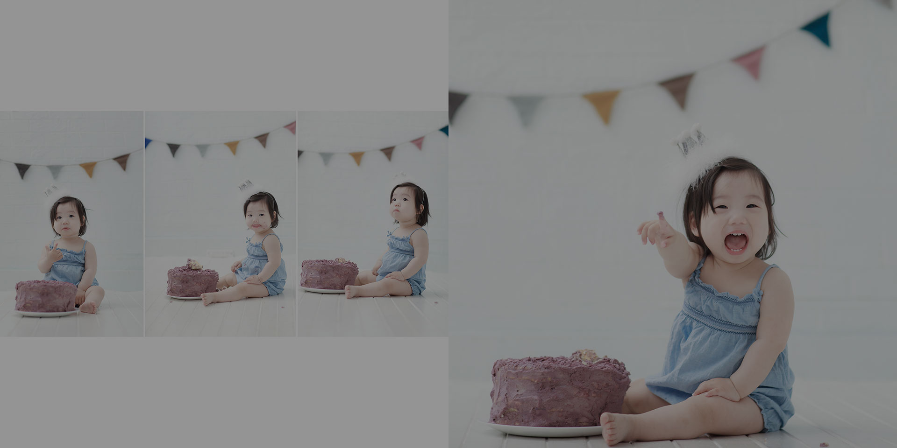

Kids,Cake Smash Photography Brisbane

Cake smash photography- what is it?
Today, there are many parents especially in the Australia who are finding it as a trend to have the cake smash photography. On the other hand, this is the way that you can use these photographs in the sessions of the child’s party. With this, you can also start the preparation of their birthday before the time.
On the other hand, this is the way that you can have the proper photographs with the help professional photographers. The actual cake shots are the best which is there with the children’s space. Other than this, you must have long sessions for having the best photographs for your little one’s birthday. The parents must be there at the time of the photography sessions. This is because they will act as the assistant in making the kids laugh and make them feel comfortable.
Other than this, there are several comfortable ways through which you can have beautiful pictures of the cake smash which you can add to their birthday party cards. In addition to this, the session is greeted when the kid is happily playing with the cake.
For another local studio option focused on first birthdays, see Sweetlife Photography's cake smash and first birthday photography in Brisbane.
On the other hand, there are many ways that you can have the best baby birthday photography. But there are people who are not aware of the things which are available for photography. Also, you are among them, right? Then you don’t have to worry about reading the article further you will have all the tips to get the right photograph at the birthday of the kids. So, let us know that.
In addition to this, the birthday of the newborn is the best way that you can have the best memories of the kids. However, with this, you will experience in getting the best and professional photography.
Thus, this is the way that you can have the most beautiful and elegant photos. Let’s know about more forms of photography which you can have.
Tips to have Baby birthday photography
Moreover, there are people who require having some of the tips to get the right and the best photographs on the baby’s birthday. On the other hand, you must have a view on the tips that are stated below-
Select the best party photographer
The first and foremost thing which you have to do is, you must select the best photographer.
However, you must select the one who is having the best equipment for clicking different photos. So, you must select the best photographer who has good experience in the field. On the other hand, you must look at all the duties of the photographer that he is following or not.